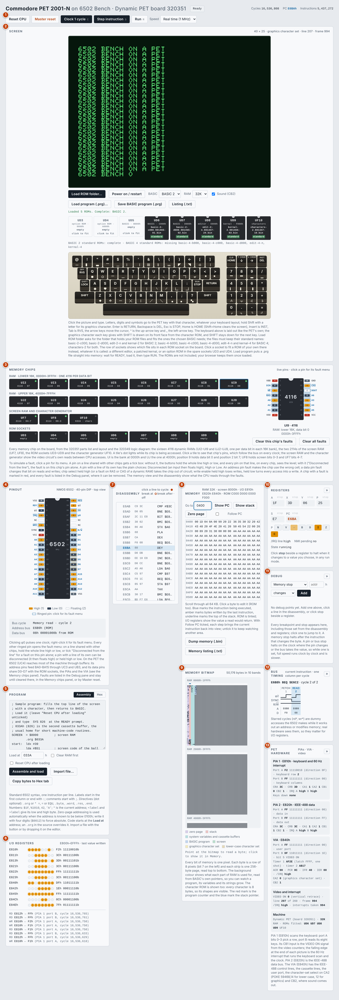
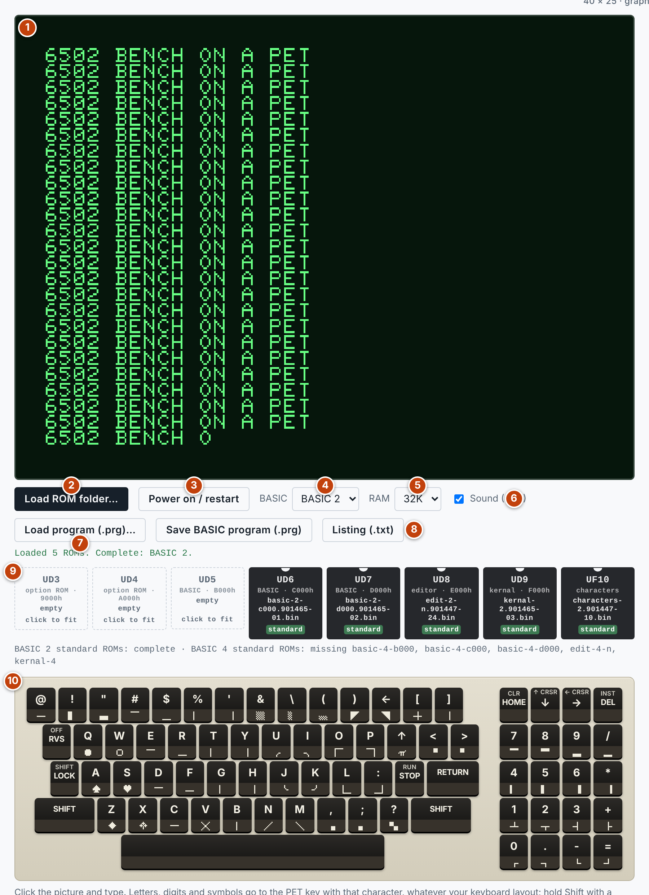
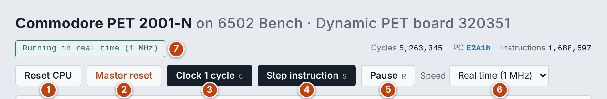
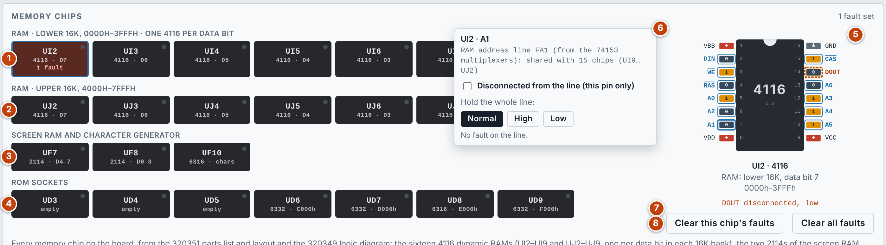
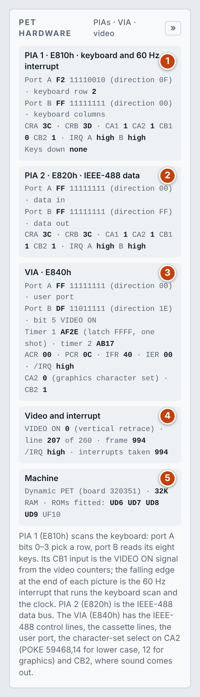
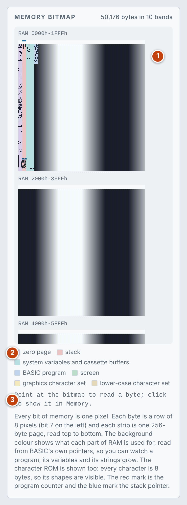

> LIST
Commodore PET documentation
How to use the emulator, and how the machine it models is put together. The numbers in each list match the numbered markers on the screenshot above it.
User guide
The emulator is 6502 Bench with a Commodore PET 2001-N built around the CPU. Everything 6502 Bench does still works here; this guide covers what the machine adds, and points to the 6502 Bench documentation for the shared debugging tools.
Quick start
- Choose BASIC 2 or BASIC 4.
- Press Load ROM folder… and choose the folder that holds your own PET ROM files. The emulator fits the ones the chosen BASIC needs. The ROMs are copyrighted and are not included. Your browser keeps them, so you only load them once.
- The machine switches on and shows
READY. - Click the picture and type, or click the keys drawn under it.
The screen

- Toolbar: reset, clock, step and run controls.
- Screen: the picture, the BASIC and RAM choices, programs, the ROM sockets and the keyboard.
- Memory chips: every memory chip on the board, with live pins and fault simulation.
- Pinout: the 6502, live; its ringed pins take faults.
- Program: the assembler and hex loader.
- I/O registers: the last value written to the interface chips, and a log.
- Disassembly
- Memory
- Memory bitmap: the RAM, the screen and the ROMs as a picture, tinted by use.
- Registers
- Debug: breakpoints, stops and faults.
- Bus timing
- PET hardware: the two PIAs, the VIA, and the video and interrupt state.
The machine, the display and the keyboard

- Picture: 40 columns by 25 rows in green. Click it to give it the keyboard. The line above the picture names the character set in use, and the line and frame being drawn.
- Load ROM folder…: see ROMs and sockets.
- Power on / restart: resets the machine and runs it in real time.
- BASIC: BASIC 2 or BASIC 4, each with its own set of ROMs.
- RAM: 8K, 16K or 32K.
- Sound: plays the sound that programs make on the VIA's CB2 line. Browsers only allow sound after your first click or key press.
- Load program (.prg)…: see Programs and listings.
- Save BASIC program (.prg) and Listing (.txt)
- ROM sockets: which file sits in each ROM socket on the board.
- Keyboard: laid out like the PET's own graphics keyboard. The graphics character each key gives with SHIFT is drawn on its front face. SHIFT stays down for the next key.
On your own keyboard, letters, digits and symbols go to the PET key with that character, whatever your keyboard layout. Hold Shift with a letter for its graphics character.
| Your key | PET key |
|---|---|
| Enter | RETURN |
| Backspace | DEL |
| Esc | STOP |
| Home | HOME (with Shift, clear the screen) |
| Insert | INST |
| Tab | RVS |
| Arrow keys | Cursor movement |
| ^ and _ | The up-arrow and left-arrow keys |
ROMs and sockets
Load ROM folder… looks in the folder you choose for files with the standard names, and fits them:
| For | File names begin with |
|---|---|
| BASIC 2 | basic-2-c000, basic-2-d000, edit-2-n, kernal-2 |
| BASIC 4 | basic-4-b000, basic-4-c000, basic-4-d000, edit-4-n, kernal-4 |
| Both | characters-2 (the character generator) |
The line under the sockets says which standard sets are complete and which files are missing.
Click a socket to fit a ROM of your own there instead, whatever it is called: a different editor, a patched kernal, or an option ROM in the spare sockets UD3 and UD4.
Programs and listings
- Load program (.prg)…: puts a
.prgfile straight into memory. Wait forREADY., load it, then typeRUN. - Save BASIC program (.prg): downloads the BASIC program in memory.
- Listing (.txt): the registers, BASIC's pointers, the interface chips, the BASIC program as text, the screen and a hex dump of RAM.
- Character sets:
POKE 59468,14switches to lower case andPOKE 59468,12back to graphics.
Running and stepping

- Reset CPU
- Master reset: also forgets the ROMs (load them again to switch on) and clears memory, breakpoints, stops and faults. It asks for a second click.
- Clock 1 cycle (C): one clock, which is one bus cycle.
- Step instruction (S)
- Run / Pause (R). The keyboard shortcuts work when the picture does not have the keyboard.
- Speed: Real time (1 MHz) runs at the PET's own speed. Full speed runs as fast as your computer allows. The slow clock rates let you watch the pins change.
- Status: what the machine is doing, or what halted it.
Memory chips and fault simulation

- RAM, lower 16K: UI2–UI9, one 4116 for each data bit. Position 9 holds data bit 0 and position 2 holds bit 7.
- RAM, upper 16K: UJ2–UJ9, arranged the same way.
- Screen RAM and character generator: the two 2114s UF7 and UF8, and the character ROM UF10.
- ROM sockets: UD3–UD9.
- Pinout: click a tile to see that chip's pins, which follow the bus on every clock. The screen RAM and the character generator also show the video circuit's own reads between CPU accesses. A tile's dot lights while its chip is being accessed, and a tile with a fault turns red.
- Fault menu: click a pin. It names the line the pin is on and the other pins that share it. Hold the whole line High or Low, or tick Disconnected from the line for a fault on this pin alone. A pin on a line of its own has the plain choices Disconnected, High and Low.
- Faults on this chip
- Clear this chip's faults (its pins, and the lines its pins are on) and Clear all faults
There are two kinds of fault:
- A line held high or low is a short on the wire: every pin on that line, on every chip, sees the level and shows it.
- A pin disconnected from its line (tick the box in the menu) is a broken trace or a lifted pin: only that chip is affected. A disconnected input floats high, or can be given a level of its own. A disconnected pin ignores a fault on its line.
The lines follow the 320349 logic diagram. The 6502's own data bus D0–D7 goes to the seven ROM sockets (and the PIAs and VIA); its address goes through the 74LS244s UC3 and UB3 to BA0–BA15, which feed the ROMs. The sixteen RAM chips share the address lines FA0–FA6 from the 74153 multiplexers, the RAS0 and RAM R/W lines, and each bank its CAS line (CAS0 for UI, CAS1 for UJ); the two chips of a data bit share its line RD0–RD7, with each chip's DI and DO joined. The buffers, multiplexers and support chips are not drawn as chips.
The 6502's own pins take faults too: click any ringed pin on the Pinout panel for the same menu (φ0 pulses one clock on a click; right-click it for its menu). A fault on an address or data pin acts on everything the processor reads and writes; R/W held high loses the writes; φ0, RES and RDY hold the processor; IRQ and NMI act on it.
The machine then runs with the faults, and the memory view and the disassembly show what the CPU reads through them:
| Pin | Fault | Effect |
|---|---|---|
| Address | Any | The chip uses the wrong cell. A disconnected input floats high |
| Data | Any | That bit is changed on reads and writes |
| Chip select (RAS or CAS on a dynamic RAM) | High or disconnected | The chip is out of circuit |
| Write enable | High or disconnected | Writes are lost |
| Write enable | Low | Every access becomes a write |
Faults are listed in the Debug pane and cleared there, here, or by Master reset.
PET hardware panel

- PIA 1: both ports in hex and binary with their direction registers, the keyboard row selected, the control registers and control lines, the interrupt outputs, and the keys held down.
- PIA 2: the same for the IEEE-488 data ports.
- VIA: both ports, the two timers, the control and interrupt registers, the character set chosen by CA2, and CB2, where sound comes out.
- Video and interrupt: the VIDEO ON signal, the line and frame, the /IRQ line and the interrupts taken.
- Machine: the board, the RAM size and the ROMs fitted.
Memory bitmap

- Bands: the RAM, the screen RAM, each ROM and the character ROM, one pixel per bit; scroll the box to see them all. In the character ROM every character is 8 bytes, so its shapes are visible. The red mark is the program counter and the blue mark the stack pointer.
- Tints: the background colour shows what each part of RAM is used for, read from BASIC's own pointers: the zero page, the stack, the system variables, the BASIC program and so on. You can watch a program, its variables and its strings grow.
- Readout: point at the bitmap to read a byte; click to show it in the Memory panel.
The debugging tools
The remaining panels are 6502 Bench's own and work the same way here.
- Pinout: as described there, except that the input pins open the fault menu here instead of toggling
- Loading a program: the sample program loads at
033Ah, in the cassette buffer; start it from BASIC withSYS 826 - Disassembly and breakpoints
- Memory
- Registers and register stops
- Debug pane: memory, pin and bus stops
- Bus timing: including the dummy cycles, which matter when they touch the interface chips
Hardware reference
The model is the Commodore PET 2001-N and CBM 3000 series: the "Dynamic PET" main board, assembly 320351. It follows the 320351 parts list and layout and the 320349 logic diagram.
The machine
| Part | Details |
|---|---|
| CPU | 6502 at 1 MHz |
| RAM | 8K, 16K or 32K of dynamic RAM |
| Screen | 40 × 25 characters, from 1K of screen RAM and a character generator ROM |
| Interface chips | Two 6520 PIAs and one 6522 VIA |
| ROM | BASIC, the screen editor and the kernal, in 4K sockets |
Memory map
| Address | Contents |
|---|---|
| 0000h–7FFFh | RAM: 8K, 16K or 32K |
| 8000h–83FFh | Screen RAM, repeated up to 8FFFh |
| 9000h–9FFFh | Socket UD3: option ROM |
| A000h–AFFFh | Socket UD4: option ROM |
| B000h–BFFFh | Socket UD5: BASIC 4 |
| C000h–CFFFh | Socket UD6: BASIC |
| D000h–DFFFh | Socket UD7: BASIC |
| E000h–E7FFh | Socket UD8: the screen editor |
| E800h–EFFFh | The interface chips |
| F000h–FFFFh | Socket UD9: the kernal, with the 6502's vectors |
The character generator UF10 is not on the CPU's bus. It holds two sets of 128 characters, 8 bytes each.
Interface chips
| Chip | Address | Use |
|---|---|---|
| PIA 1 (6520) | E810h | Port A bits 0–3 select a keyboard row; port B reads its eight keys. Cassette 1. CB1 takes VIDEO ON, which gives the 60 Hz interrupt |
| PIA 2 (6520) | E820h | The IEEE-488 data bus: port A in, port B out |
| VIA (6522) | E840h | IEEE-488 control lines, cassette 2, the user port on port A, VIDEO ON on port B bit 5, character set select on CA2, sound on CB2 |
Video and the 60 Hz interrupt
- No video chip: the picture is made by TTL counters that read the screen RAM and the character generator. The emulator draws the picture from the screen RAM once per frame; it does not model the counters themselves.
- Timing: 64 clock cycles per line and 260 lines per frame, about 60 pictures a second. The first 200 lines are the picture.
- VIDEO ON: high while the 200 picture lines are being drawn. It is the one video signal the software sees, and its timing is modelled from the line counter.
- Interrupt: VIDEO ON goes to CB1 of PIA 1. Its falling edge at the end of each picture is the machine's 60 Hz interrupt, which runs the keyboard scan and the clock.
Keyboard
This is the graphics keyboard. PIA 1 port A bits 0–3 go to a decoder that pulls one of ten rows low; port B then reads eight keys, low for a key that is down.
| Row | PB0 | PB1 | PB2 | PB3 | PB4 | PB5 | PB6 | PB7 |
|---|---|---|---|---|---|---|---|---|
| 0 | ! | # | % | & | ( | ← | HOME | CRSR → |
| 1 | " | $ | ' | \ | ) | CRSR ↓ | DEL | |
| 2 | Q | E | T | U | O | ↑ | 7 | 9 |
| 3 | W | R | Y | I | P | 8 | / | |
| 4 | A | D | G | J | L | 4 | 6 | |
| 5 | S | F | H | K | : | 5 | * | |
| 6 | Z | C | B | M | ; | RETURN | 1 | 3 |
| 7 | X | V | N | , | ? | 2 | + | |
| 8 | SHIFT (left) | @ | ] | > | SHIFT (right) | 0 | - | |
| 9 | RVS | [ | SPACE | < | STOP | . | = |
Memory chips
| Position | Chip | Use |
|---|---|---|
| UI2–UI9 | 4116 (4108 in an 8K machine) | RAM at 0000h–3FFFh. UI9 is data bit 0 and UI2 is bit 7 |
| UJ2–UJ9 | 4116 | RAM at 4000h–7FFFh. UJ9 is data bit 0 and UJ2 is bit 7 |
| UF7, UF8 | 2114 | Screen RAM. UF8 holds bits 0–3 and UF7 bits 4–7 |
| UD3–UD7, UD9 | 6332 (4K ROM) | ROM sockets |
| UD8 | 6316 (2K ROM) | The screen editor |
| UF10 | 6316 (2K ROM) | Character generator |
Both RAM banks share one RAS line; UI is on CAS0 and UJ on CAS1. Multiplexers put address lines BA0–BA6 on the RAM address pins as the row. As the column, pin A0 carries BA13 and pins A1–A6 carry BA7–BA12.
The positions come from Commodore's parts list and logic diagram. They have not been checked against a real board.
What is not emulated
- Cassette and disk drives: programs load and save as
.prgfiles instead. Nothing is attached to the IEEE-488 bus. - The video counters: see above.
- The business keyboard and the 80-column machines.